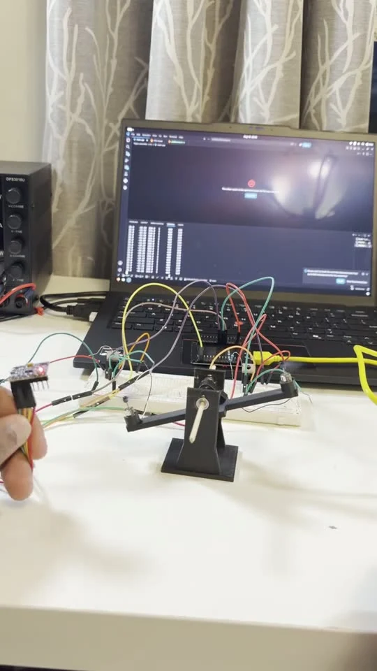
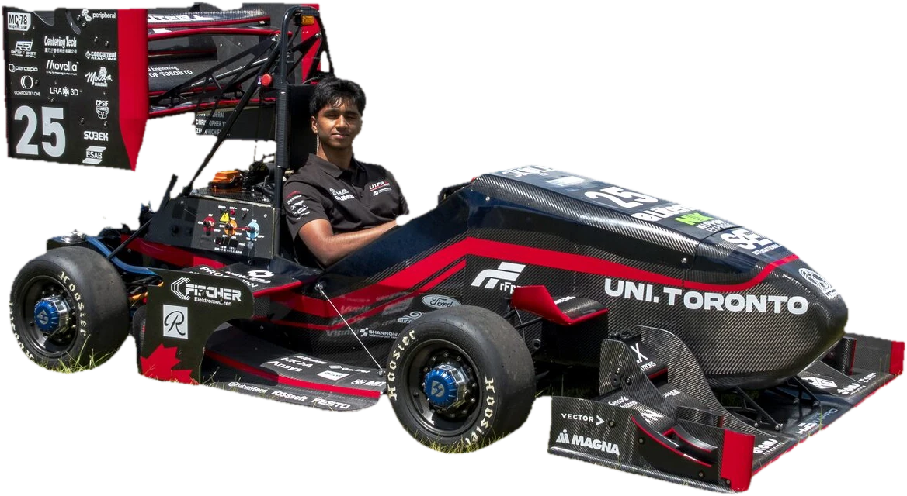
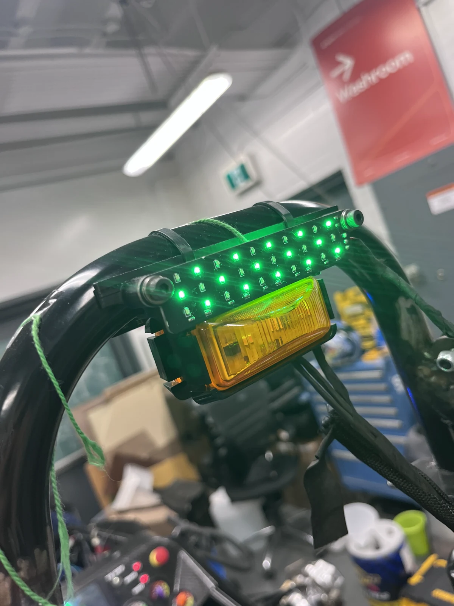
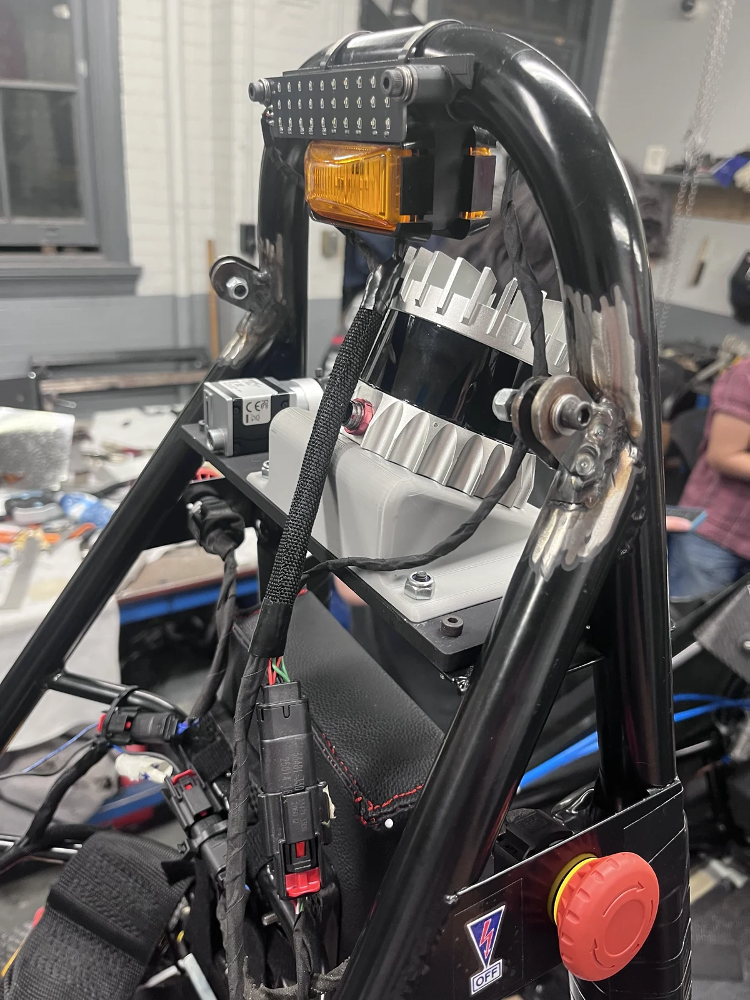
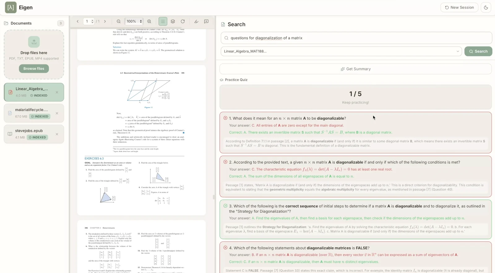
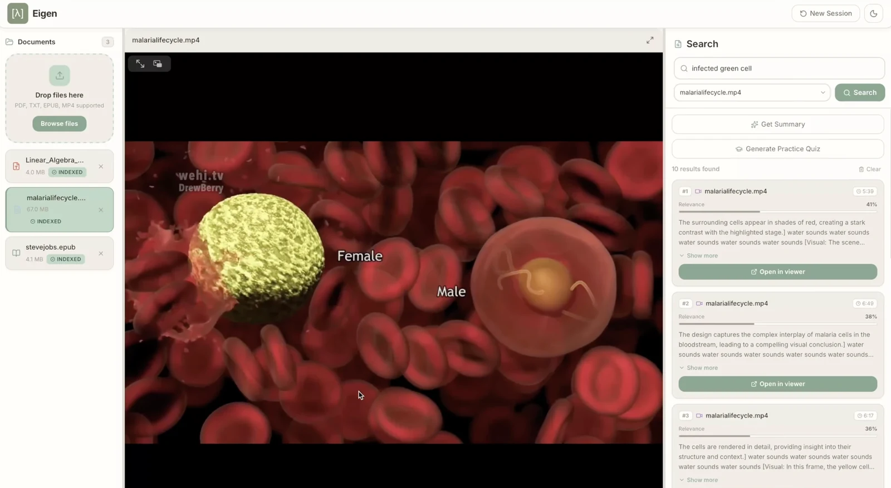

Flight controller test stand
One-degree-of-freedom pitch rig: a complementary filter on MPU6050 data feeds a PID control loop driving coreless motors via N-channel MOSFETs.
View on GitHub

Computer Engineering @ University of Toronto.
Electrical @ UofT Formula Racing.
Currently working on the future of vehicles and robotics. I love cars :)
One-degree-of-freedom pitch rig: a complementary filter on MPU6050 data feeds a PID control loop driving coreless motors via N-channel MOSFETs.
View on GitHub
Built for University of Toronto Formula Racing's 2026 electric car. It monitors the electrical and driverless systems and visually flags faults to the team.


Semantic search for study material. Upload PDFs, EPUBs, videos and images, then search across them by meaning. Generates summaries and quizzes automatically.
View on GitHub
